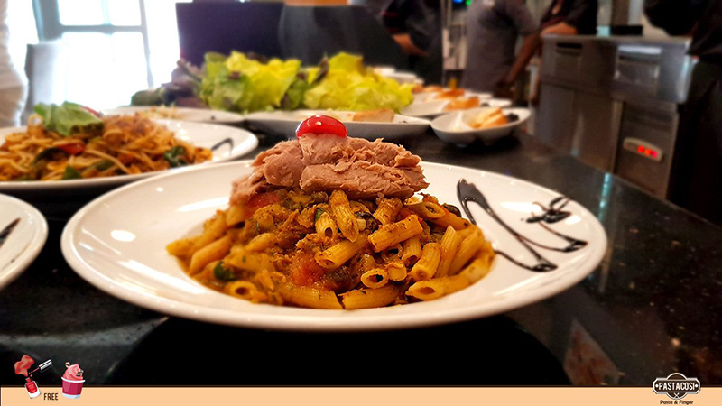
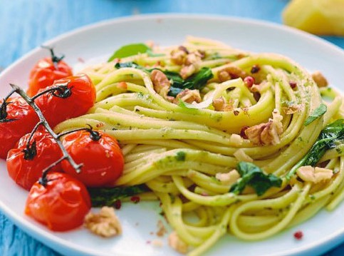

THE MENU

SPAGHETTI SALSA
$29.99
A dish in gastronomy is a specific food preparation, a "distinct article or variety of food",[1] ready to eat or to be served. A dish may be served on tableware, or may be eaten in one's hands. Instructions for preparing a dish are called recipes.

LASAGNE ITALIENNE
$23.99
Country Tomato and Bacon Pie is comfort food at its finest. Fresh tomatoes with layers of cheese and bacon all baked in a yummy pie crust!

SPAGHETTIS PESTO
$19.99
Serve up a sensational spaghetti dish for dinner. Choose from classic Italian pasta recipes such as spaghetti Bolognese, carbonara, puttanesca and many more.